Design and CFD evaluation of a downforce-driven aerodynamic package for a low-speed,
corner-dominated race car — developed from the rulebook and a power budget upwards,
then tested against lap time rather than against a force number.
Role: Head of AerodynamicsENP Racing TeamÉcole Nationale Polytechnique, AlgiersOctober 2026Simulation study
01 · Overview
The argument in one paragraph
Formula Student circuits are slow and corner-dominated, so the car is
traction-limited, not power-limited: the engine sits at wide-open throttle
only 15–20% of a lap. That single observation sets the whole design direction — buy tyre
grip with downforce and pay for it in drag, because drag is cheap at these speeds. The
study derives how much drag is affordable, designs the rear wing first as the stable
primary device, then sizes the front wing to place the centre of pressure where the
chassis wants it.
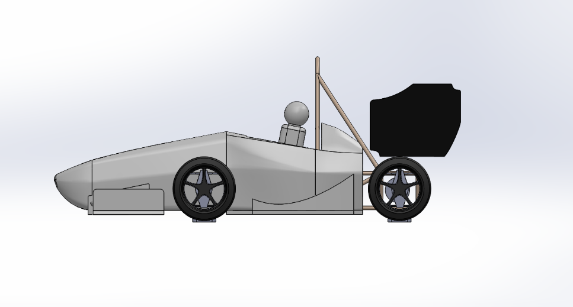
Fig 1The complete package on the vehicle geometry — front wing with footplate, three-element rear wing on swan-neck mounts, lateral side diffusers and vertical underbody walls.
460NDownforce, wingsagainst 296 N drag
2.69CL with wingsCD = 1.73
3.35CL full packageCD ≈ 1.70 — drag unchanged
1.97Final CL/CDup from 1.56, wings only
−2.12sLap-time gain86.71 → 84.59 s (−2.4%)
Read this first
This is a theoretical study of the design process. All aerodynamic and lap-time
results come from simulation; rulebook limits and literature/reference values are inputs, not
simulation outputs. There is no wind-tunnel or on-track validation, and the full-car geometry
used components that were not yet in their final form. The results are meaningful as
relative comparisons between configurations run under identical assumptions — not as
predictions of competition performance.
02 · Constraints
The rules decide the shape before physics does
Aerodynamic devices are bounded by a technical envelope, a dimensional envelope and a
structural test. Working inside them from the start avoids designing a wing that cannot
be raced.
Table 1Constraint envelope used to bound the design.
Constraint
Requirement
Design consequence
Powered devices
No powered aerodynamic device (e.g. suction fan)
All downforce must be passive
Front device height
< 500 mm above ground; < 250 mm if outboard ahead of the front axle
Low, wide front wing with footplate
Rear device height
< 1.1 m
Sets rear-wing mounting height
Width
Above 500 mm: within the inner edge of the rear tyres
Rear track 1350 mm − 2×190 mm tyre ⇒ ≈1160 mm usable span
Longitudinal
≤ 700 mm ahead of front tyres; ≤ 250 mm behind rear tyres
Bounds wing overhang and moment arm
Edge radii
≥ 5 mm horizontal, ≥ 3 mm vertical on forward-facing edges
Leading edges cannot be arbitrarily sharp
Main load test
200 N over ≥ 225 cm², deflection ≤ 10 mm
Drives rib and mount stiffness
Point load test
50 N anywhere, deflection ≤ 25 mm
Local skin and rib sizing
Deflection limits scale proportionally if a lower test force is applied. Suspension travel is excluded from the measurement.
The span limit matters more than it looks. Lift coefficient scales roughly with
1/(1 + 2/AR), so using the whole permitted width is the cheapest
efficiency gain available — it reduces induced drag without touching the section design.
03 · Strategy
Step 1 — how much drag can we afford?
The report expresses pressure differences through the pressure coefficient, then integrates
those loads over the reference area. Here CL is taken as positive for downforce.
q = ½ ρ v2, p = Cpq, L = CLqA, D = CDqAReport (1–3)
Power absorbed by drag grows with the cube of speed. With air density
ρ = 1.225 kg/m³ and P in kW:
P = ½ ρ CD A v3 ≈ CD A v31633Eq. 1
The car is assumed to run a CBR600RR engine developing 51.5 kW at 8000 rpm.
With about 12% drivetrain loss, 45.32 kW reaches the wheels. Taking a baseline
drag area from comparable cars (CD = 0.83, A = 0.9 m², 2003 Monash FS) at the
track's typical maximum of 120 km/h (33.3 m/s), the power left over for drag-inducing devices is:
Comparable Formula Student baseline data (source report Table 2).
Reference car
CD
Frontal area [m²]
2003 Monash FS · used for the budget
0.83
0.90
2014 Huddersfield FS
0.71
0.89
Ps = PE − CD A v31633 = 28.382 kWEq. 2
Inverting Eq. 1 for that budget gives the rear-wing drag area the design is allowed to spend —
the number that sizes the whole rear wing:
CD,RAR = 1633 Psv3 = 1.25 m²Eq. 3
Why this is the right way round
Roughly 28.4 of the 45.3 kW at the wheels can be spent on wing drag without
hurting top speed or acceleration. That is a very large allowance, and it is what justifies
an aggressive multi-element package instead of a low-drag one. The budget is set
before any geometry exists.
Checking the trade-off analytically
Two closed-form studies test the premise before any CFD. Integrating the constant-power
acceleration equation gives the time to reach a speed as a function of drag area; balancing
tyre friction against centripetal demand gives the cornering speed as a function of downforce:
a = dvdt = FM − ½ ρ CDA v2m, P = FMv, k = ½ ρ CDAReport (5–6)
Full constant-power time-to-speed relation (report Eqs. 6–8)
Rearranging the constant-power model gives the integral below. Define v∞ = (P/k)1/3, s = v/v∞, and s0 = v0/v∞:
The report notes that this constant-power model omits tyre slip and gear changes; the plotted curves are indicative, not a vehicle-performance prediction.
μf ( m g + ½ ρ CLA vmax2 ) = m vmax2r; vmax = √μfm gmr − ½ μfρCLAReport (9–10)
Analysis gallery · selected results from 53 pages
Follow the load—from drag budget to lap time
The first view puts both approximate model plots together—drag’s effect on acceleration and downforce’s effect on cornering speed. Navigate the other report visuals with the labelled controls below, or use arrows and swipe.
01 / 05 · STRAIGHT + CORNERING MODELS
Drag on the straight. Downforce in the corner.
These paired report plots show both sides of the aero trade-off: increasing CDA bends the acceleration curve down, while added CL raises cornering speed. Both traces are approximate digitizations, not regenerated simulations.
Report Figs. 15–16 · approximate digitizations; inputs are incomplete in the source
Straight-line · drag area
Cornering · downforce coefficient
02 / 05 · AIRFOIL SCREENING
From section shape to lift curve
The S1223 was retained as a starting point after XFOIL screening at Re = 300,000. The five panel-count traces nearly coincide; the report’s exact peak-lift summary is tabulated in the screening section.
Report Fig. 21 · original analysis plot; raw polars not supplied
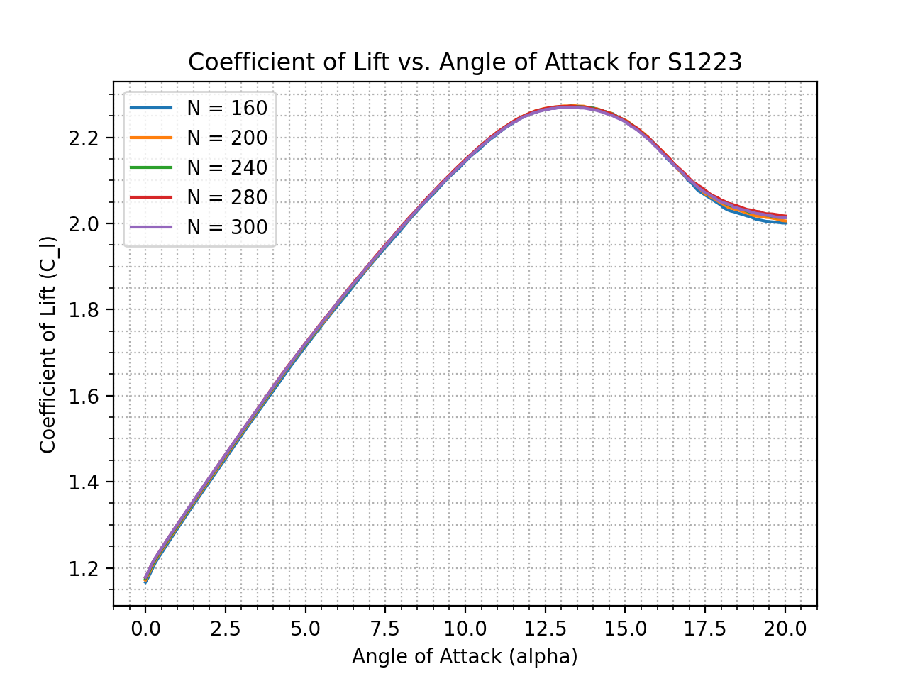
S1223 · lift coefficient by angle of attack · N = 160–300
03 / 05 · THREE-DIMENSIONAL CFD
Where the wing sheds its wake
The isolated-wing study resolves the three-dimensional tip vortex and wake. This is a source CFD visualization—not a new computed result—and complements the tabulated coefficient comparisons later in the report.
Own CFD visualization · isolated-wing study
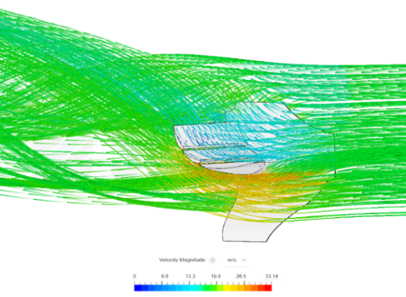
Isolated rear wing · streamlines coloured by velocity magnitude
04 / 05 · FULL-VEHICLE CFD + LAP SIMULATION
More load. No added drag.
From wings to the full package, CFD moves the car from CL 2.69 to 3.35 while CD changes from 1.73 to 1.70. The labels pair each CFD point with its simulated lap time.
Report Tables 10–12 · coefficients exact; lateral readings excluded here
05 / 05 · LAP-SIMULATOR OUTCOME
Downforce pays back in the fast corners
The lap traces nearly meet in slow corners, then separate through medium and fast turns. The full package records 84.59 s—2.12 s quicker than baseline in the report’s idealized model.
Report Fig. 33 · original OptimumLap output; not a track test
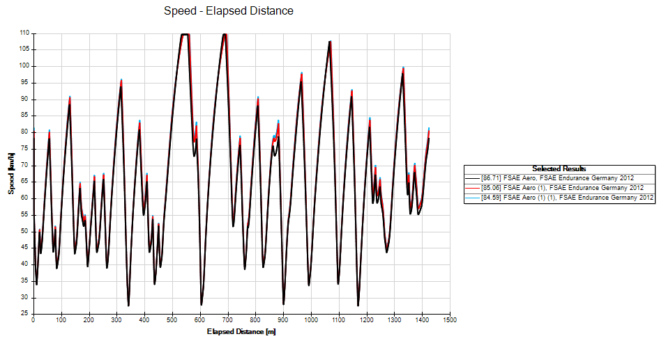
Simulated speed versus distance · FSG 2012 endurance reference
Figures 15–16 are approximate traces digitized from the report. The source does not state all curve inputs, so no missing model parameters have been inferred. The vehicle-level points use the exact CFD coefficients in Table 10; their lap times are simulation outputs from Table 12 with the rounded inputs in Table 11.
Rear wing first, front wing to balance
The rear wing operates in a steadier environment and is insensitive to steering, so it is
fixed first at the maximum usable downforce. The front wing then supplies whatever is needed
to place the centre of pressure — around 40% of total downforce at the front —
rather than maximising its own force. Balance is a prescribed input, not an outcome:
XCoP = Ff xf + Fr xrFf + FrEq. 5
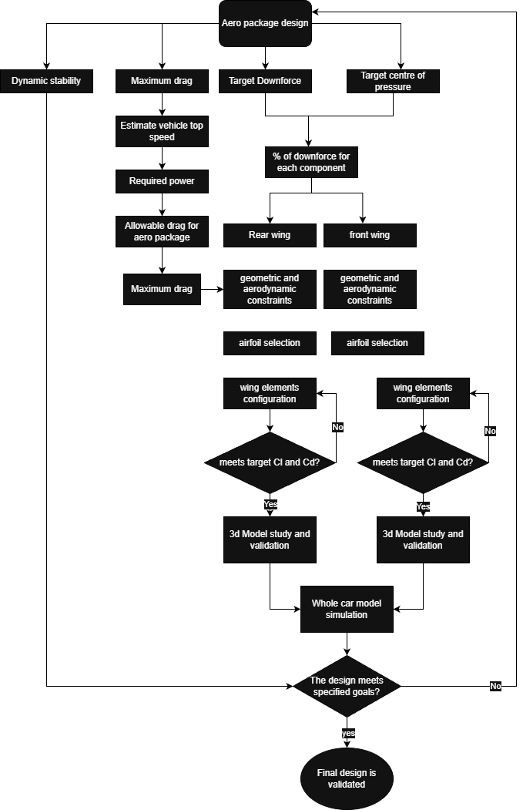
Fig 4The top-down workflow: define targets and constraints → size the rear wing → balance with the front wing → validate in 3D and against lap time.
04 · Step 2a
Screening 24 airfoils with automated XFOIL
Candidate sections were filtered from the Airfoil Tools database using established
low-Reynolds-number wing design rules, then pulled down by a Python script. A batch
framework ran every candidate through XFOIL under identical conditions so the comparison
would be fair:
Re = 300,000, transition forced at 50% chord on both surfaces
Angle-of-attack sweep from −4° to 20°
Repeated at panel counts N = 160 → 300 to check panel dependence
Polars post-processed in MATLAB for direct comparison
The chord choice itself is Reynolds-driven: at a typical cornering speed of 16 m/s with
c = 0.4 m and ν = 1.4207×10⁻⁵ m²/s, Re = Uc/ν ≈ 4.5×10⁵. A longer chord
raises Re, delays separation and softens stall — which is why the larger chords were
carried forward later.
Table 2Best XFOIL candidates at Re = 300,000.
Airfoil
CL,max
Stall behaviour
Outcome
FX74CL5140-IL
2.29
Gradual
Highest peak lift
S1223
2.23
Gradual
Selected as starting point
FX74MODSM-IL
2.12
Moderate
Reserve
E420-IL
2.10
More abrupt
Used as the fixed flap section in 2D
S1210 12%
2.05
Moderate
Not carried forward
Most candidates peaked between 12° and 14° incidence.
Fig 5S1223 lift curve. The five panel-count runs collapse onto one another — the result is panel-independent.
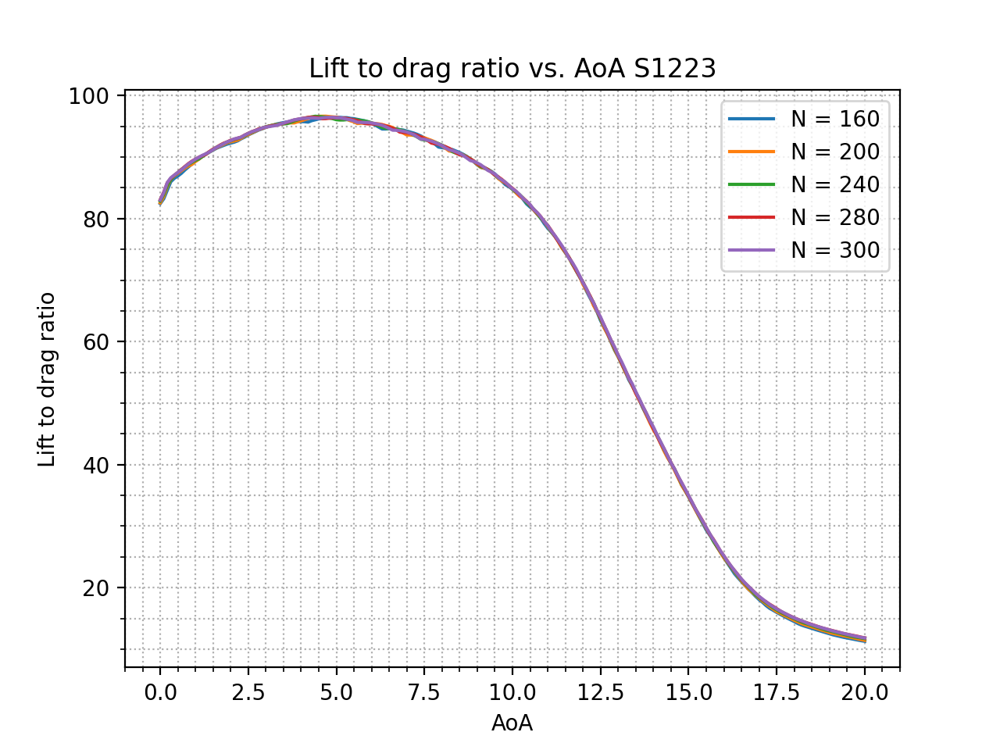
Fig 6S1223 efficiency curve, peaking near 5° before falling away towards stall.
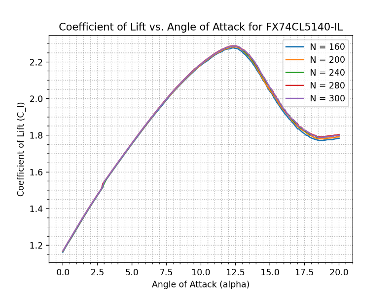
Fig 7FX74CL5140-IL reaches the highest peak lift of the set (CL,max = 2.29).
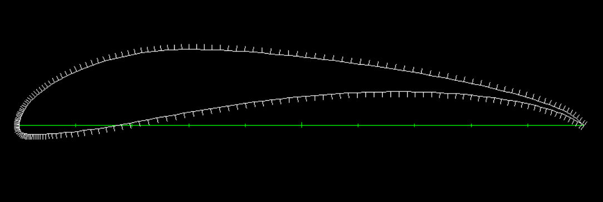
Fig 8The S1223 section: heavily cambered, with the very thin trailing edge that later caused trouble.
Engineering judgement
S1223 looked best in XFOIL, but it was not adopted directly. XFOIL tends to
over-predict lift and delay separation, and its thin trailing edge is both a manufacturing
risk and a poor partner for a slotted multi-element assembly. It was kept as a
starting point for 2D CFD and later customisation — a good example of not letting a
cheap tool make the final decision. The detailed method describes an AoA sweep of −4° to 20°;
Appendix Table 15 instead lists 0° to 20°. This page follows the detailed method-section range.
05 · Step 2b
27 parametric 2D CFD runs in ANSYS Fluent
The three-element assembly was studied in 2D to isolate how geometry and incidence drive
loading, without the cost and interference of a full 3D model. A fully structured mesh was
used with a refined near-field and a coarsened far-field, and inflation layers on every
element held y⁺ < 3.
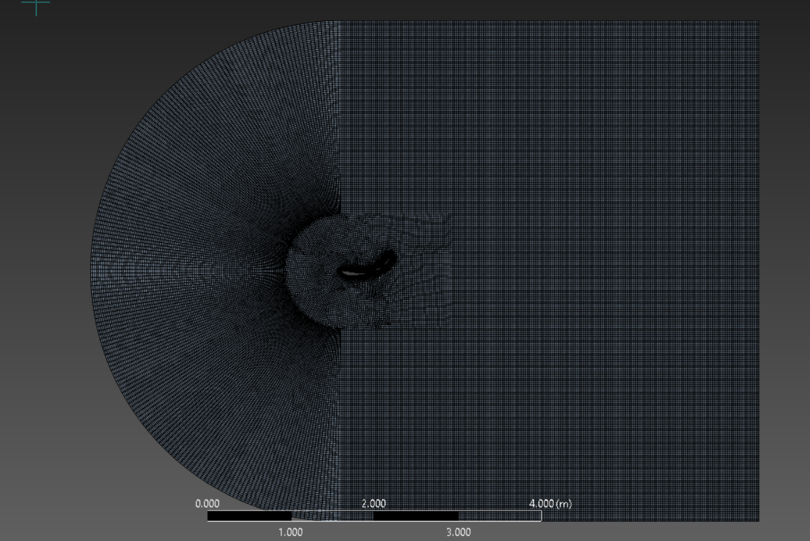
Fig 9Structured 2D domain: near-field refinement around the elements, coarse far-field for efficiency.
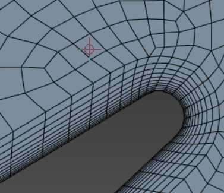
Fig 10Inflation layers at the rounded trailing edge, resolving the boundary layer to y⁺ < 3.
Design variables
To keep the comparison clean, E420-IL was fixed for all flap elements, so
airfoil-to-airfoil variation could not skew the trends. The sweep then varied:
Mainplane chord: 350, 400 and 450 mm
Flap incidences: αF1 = 25/30/35°, αF2 = 55/60/65°
Slot gap and overlap in a follow-up sweep on the best configuration
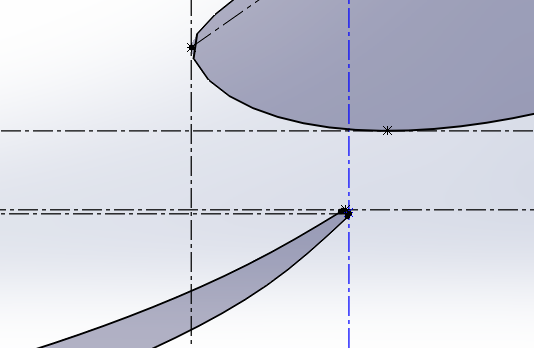
Fig 11Slot gap and overlap definition. Rotating a flap changes the slot shape and convergence ratio as a side effect — an intrinsic coupling that had to be accounted for.
Explore the 2D design space
All 27 Fluent runs from Tables 4–6 of the report. Hover or focus a point for its full setup.
c = 350 mmc = 400 mmc = 450 mm450 mm config 2 · slot-sweep baseline
At 450 mm, configuration 3 gives the highest downforce (378.9 N), while configuration 1 gives the highest lift-to-drag ratio (35.4). Configuration 2 is the baseline for the follow-up slot-gap sweep.
What the sweep showed
The 450 mm mainplane was carried forward. Configuration 3 gave the highest load (378.9 N); configuration 1 gave the highest efficiency (CL/CD = 35.4). Configuration 2 was the baseline for the slot-gap/overlap sweep.
The mainplane carries 75–80% of the load. The first flap contributes little and the second almost nothing at small chords; the flaps only develop real suction peaks at c = 450 mm.
αF1 = 25° is the limit. Beyond it the first flap separates early: downforce falls and drag rises.
Weak flap suction peaks indicated a choked slot jet — the slot was not feeding enough high-energy flow to the downstream element.
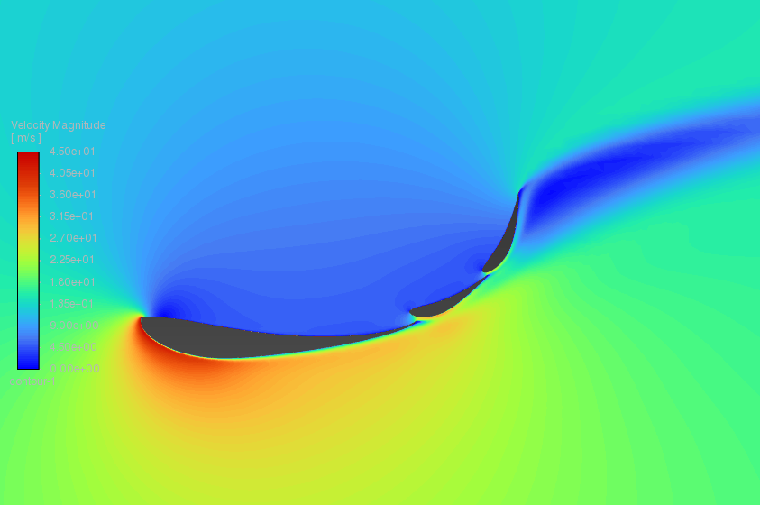
Fig 12Velocity magnitude, c = 450 mm. The slot jets re-energise the downstream boundary layers.
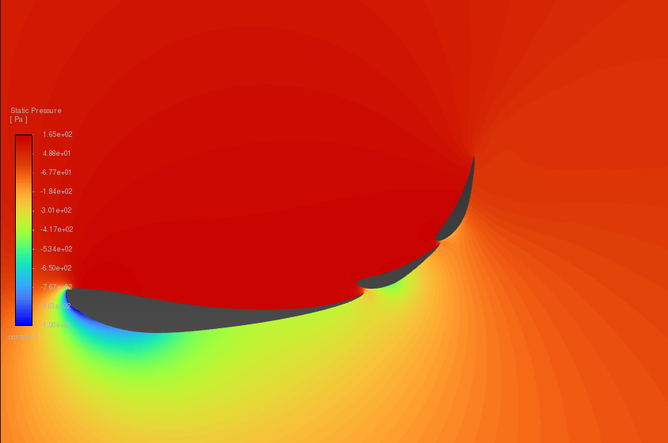
Fig 13Static pressure for the same run — the mainplane's suction surface dominates the loading.
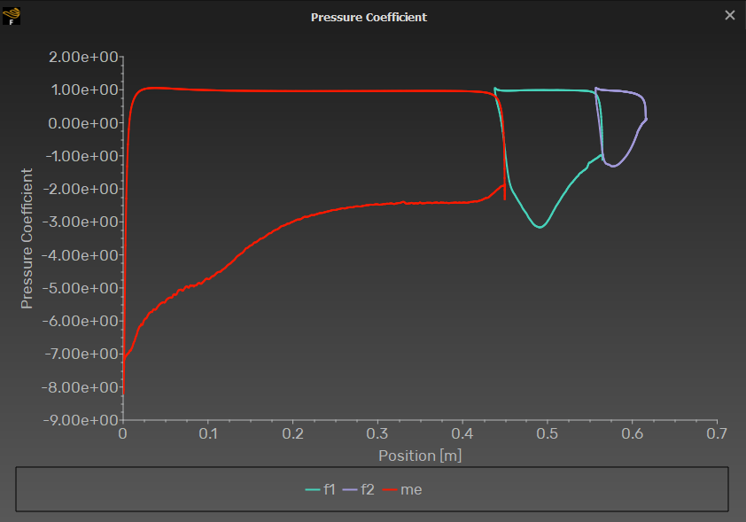
Fig 14Cp across the three elements (c = 450 mm). The area under the main-element curve dwarfs the flaps — the quantitative basis for the 75–80% finding.
Fixing the choked slot
Because the second flap showed the weakest suction, its slot gap and overlap were opened up
first. The CFD confirmed the mechanism: more high-energy air reaches the second element,
the boundary layer stays attached longer, and pressure recovery becomes gentler. The force
change in 2D was small — but the flow quality gain was expected to matter more in 3D.
Table 3Second-flap slot sweep and final pitch-stability check (c = 450 mm). Magnitudes.
Config
αME
OL2 [mm]
SG2 [mm]
Downforce [N]
Drag [N]
CL
CL/CD
10
0°
12
6
369.9
10.85
5.242
34.1
12
0°
12
4
369.4
10.70
5.235
34.5
14
0°
14
4
371.9
10.53
5.271
35.3
15
0°
12
6
375.0
10.79
5.315
34.8
16
+2°
8
4
380.9
11.23
5.398
33.9
17
−2°
8
4
355.4
9.57
5.037
37.2
Configs 15–17 are a pitch-stability check: ±2° on the main element brackets the ride-height
variation the car will see. Peak downforce (16) and peak efficiency (17) are different
configurations — the choice between them is a vehicle-level decision, not a wing-level one.
These are 2D section-level outputs, reported in N by the source; no reference span is stated, so they are not whole-wing loads and must not be compared directly with the 3D vehicle forces.
Data integrity note
In the source report, Table 6 configuration 9 repeats the values of Table 5 configuration 9
(297.3 N, CL = 4.740, CL/CD = 21.1). It is shown outlined in
amber in the chart above rather than silently corrected. That row should be re-checked
against the original Fluent case before being relied on.
06 · Step 2c
Designing sections instead of choosing them
Catalogue airfoils are optimised for someone else's Reynolds number and duty. With the 2D
trends understood, a Python-based airfoil editor was used to design purpose-built sections —
first with particle swarm optimisation targeting downforce at low incidence
and gentler post-stall behaviour, then with manual Bézier refinement to
enforce trailing-edge thickness and geometric safety limits.
Fig 16Custom 3 — rear-wing main element. S1223-derived, with camber shifted rearward to move the suction peak aft and a thickened trailing edge for manufacturability.
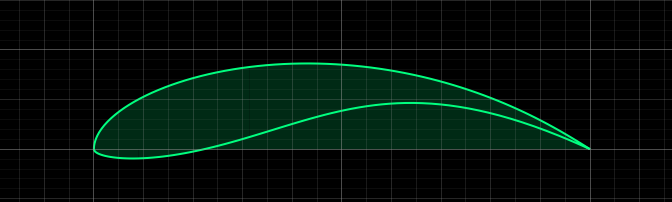
Fig 17Front-wing main element — high camber to exploit ground effect, with a straight trailing region that conditions flow for the next element.
Each element got a section matched to its job. Rear-wing flaps use a thin trailing edge and
rounded leading edge to raise the slot convergence ratio. The front-wing first flap is
strongly rear-cambered so it turns the flow parallel to the second flap's leading edge —
because on a front wing, the wake it sends downstream matters as much as the force it makes.
07 · Step 3a
3D wing CFD, endplates and mounts
Only configurations that had already proved efficient in 2D reached this stage. The isolated
rear wing was run in SimScale with the k–ω SST turbulence
model — chosen for adverse-pressure-gradient and separation prediction — and a near-wall
mesh targeting y⁺ < 1.
Table 43D computational setup, scaled on wing chord c.
Boundary
Placement / setting
Reason
Inlet
3 c upstream
Let the incoming flow develop
Outlet
8 c downstream
Room for the wake to develop and dissipate
Upper & lateral
3 c from the wing
Limit blockage and artificial boundary interaction
Turbulence
k–ω SST
k–ω near the wall, k–ε in the free stream
Near-wall
y⁺ < 1
Resolve wall shear stress rather than model it
Mesh
Unstructured, refined at surfaces and in the wake
Conform to high-curvature leading/trailing edges
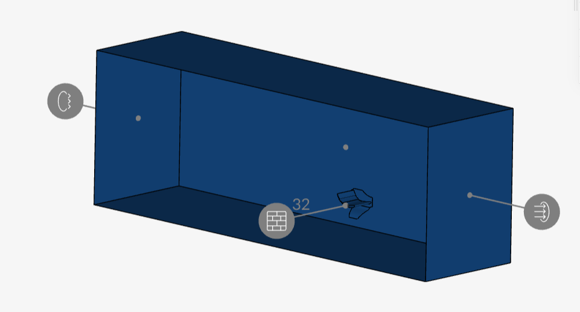
Fig 18Isolated-wing domain, sized in chord lengths (no ground effect at this stage).
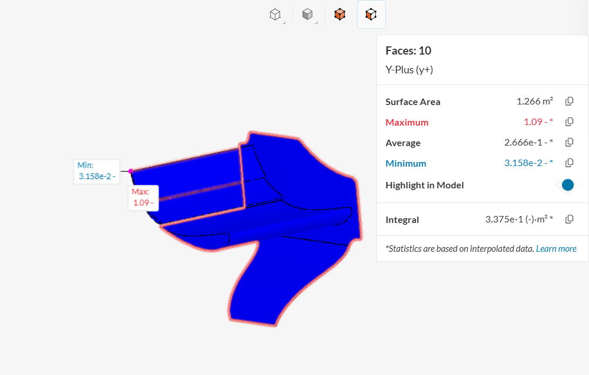
Fig 19Wall y⁺ map — the near-wall resolution target verified across the wing faces, not just assumed.
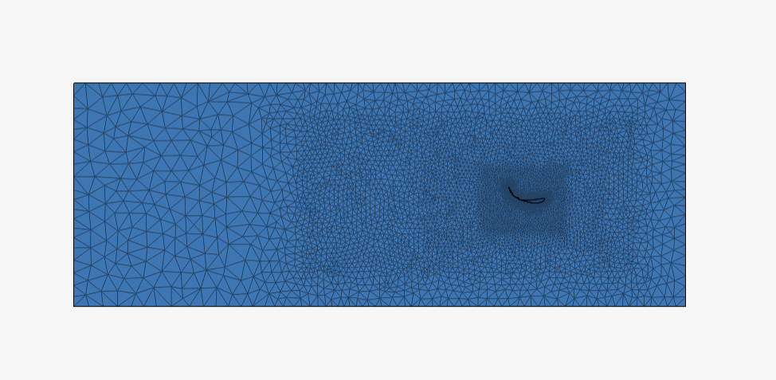
Fig 20Mesh refinement at the surfaces and downstream, resolving separation and the turbulent wake.
Endplates: deeper is not automatically better
Endplates sustain the pressure difference across the wing by blocking tip spillage. Their
first-order effect is an increase in effective aspect ratio:
AReff = ARactual(1 + 1.9 hb)Eq. 6
But that formula suggests "deeper is always better", and published CFD says otherwise:
an intermediate depth can outperform a much deeper plate, because the vortex curling under
the bottom edge energises the flow beneath the suction surface. The design therefore treats
depth as a parameter to optimise, not maximise — which also saves weight and lowers the
centre of gravity.
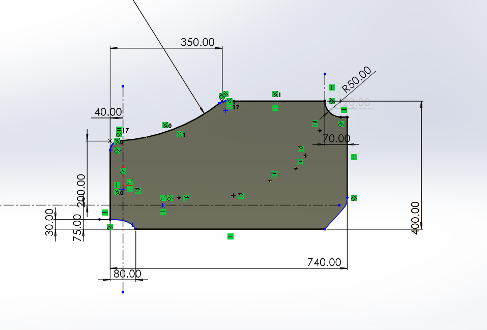
Fig 21Parametrised endplate sketch (mm). The plate is extended downwards to double as a structural support for the wing.
Swan-neck mounts
On an inverted wing the lower surface is the suction surface — the most
aerodynamically sensitive region. A conventional underside mount sits directly in that
high-velocity flow and can trigger premature separation. Top-mounted "swan-neck" supports
move the obstruction to the pressure side, where it costs far less.
Standard vs custom sections in 3D
Table 5Isolated rear-wing 3D CFD — standard against custom airfoils. Efficiency = CL/CD.
Main element
Flaps
αME/αF1/αF2
CL
CD
Efficiency
Custom 1
Custom 2
0/35/58°
3.09
0.97
3.186
S1223
FX 63-137
0/35/60°
3.47
1.08
3.212
Custom 3
FX 63-137
0/40/65°
3.73
1.29
2.890
Custom 3
FX 63-137
0/35/60°
3.54
1.11
3.190
Custom 3
Custom 4
0/35/60°
3.69
1.24
2.980
Custom 3
Custom 4 + Gurney
0/35/60°
4.12
1.57
2.622
The Gurney flap buys the most downforce (CL = 4.12) at the worst efficiency (2.62).
Because Step 1 proved drag is affordable, that trade is acceptable here — the ranking
depends entirely on the drag budget established at the start.
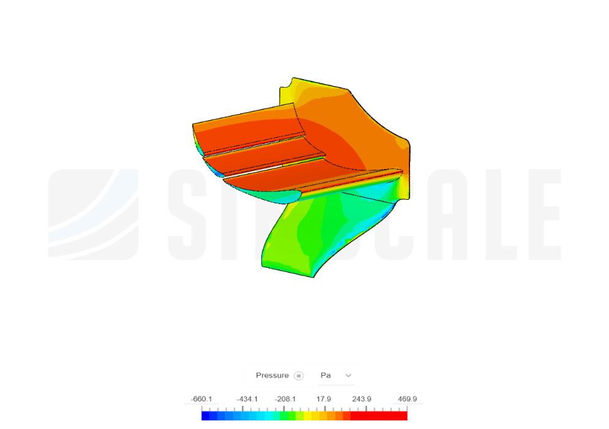
Fig 223D pressure field on the rear-wing assembly, including endplate effects.Fig 23Streamlines coloured by velocity — tip vortex and wake structure that no 2D run can show.
08 · Step 3b
Full-vehicle CFD: what the package actually does
An isolated wing number means little on a car. The full geometry was prepared for CFD by
simplifying components without changing their aerodynamic character — a spring
becomes a cylinder, not a deletion — so the model converges faster while still representing
the real flow. Body, wings, suspension arms and springs, tyres and uprights, rear axle and
differential, radiator and driver were all retained.
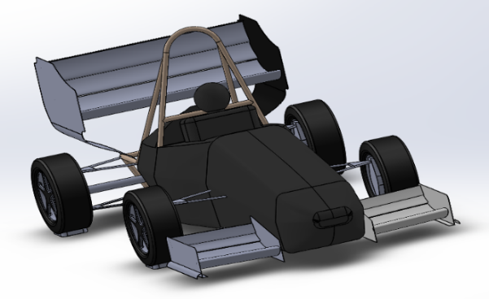
Fig 24Prepared full-car CFD geometry with the wings installed.
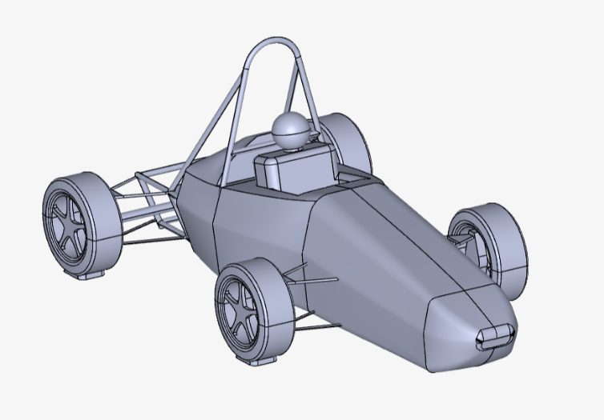
Fig 25Baseline geometry — no aero devices. The reference every later run is compared against.
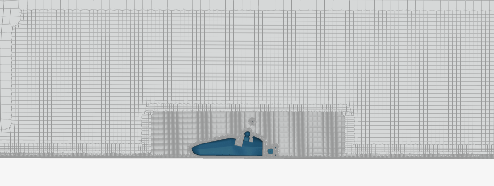
Fig 26Wind-tunnel domain mesh with local refinement around the vehicle.
The baseline returned CD ≈ 0.645 and essentially zero lift
(CL ≈ 0.0048) — a plausible starting point for a car with no
aerodynamic devices. Both later configurations were run under identical wind-tunnel
conditions, so the differences are attributable to geometry alone.
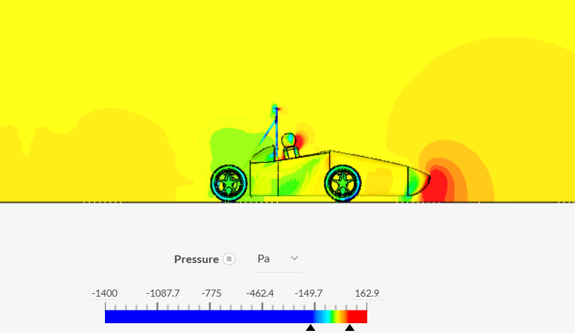
Fig 27Baseline pressure field on the body and midplane.
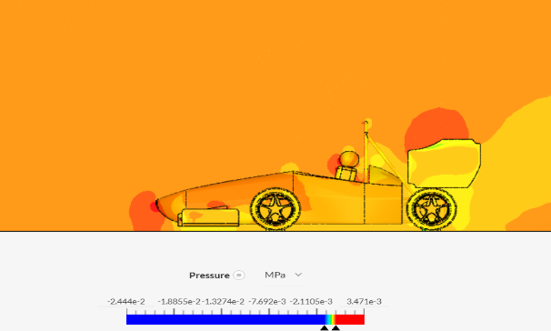
Fig 28With wings fitted — the suction regions under both wings are now the dominant feature.
Result
With front and rear wings: 460 N of downforce for 296 N of drag
(CL = 2.69, CD = 1.73, CL/CD = 1.555).
Drag rises by a factor of ~2.7 over the baseline — a large penalty, and exactly the one
the Step 1 budget said was affordable.
09 · Step 4
Downforce for free: side diffusers and underbody walls
The chassis would not accept a full-width Venturi floor without a redesign. Instead of
rebuilding the floor, two additions were tested on the existing bodywork:
lateral ramps (side diffusers) that expand the flow along the lower sides,
and vertical underbody walls that restrict lateral exchange between the
low-pressure underbody region and the surrounding flow.
A diffuser is not automatically a gain: the pressure recovery creates an adverse gradient,
and if the boundary layer cannot survive it the flow separates and the device stops working.
The walls, likewise, can add drag or leak at their ends. Both effects had to be measured
rather than assumed — so the car with wings became the new baseline, run under the
same conditions.
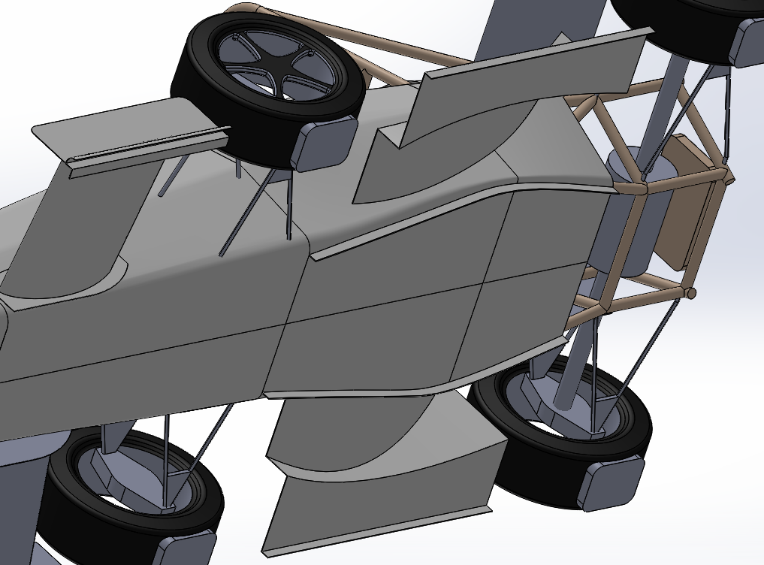
Fig 29The underbody devices in detail — lateral ramp and sealing wall working together.
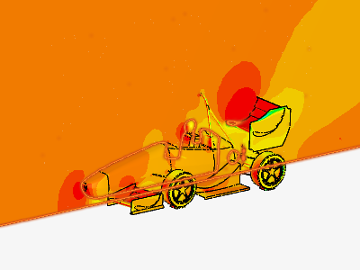
Fig 30Midplane flow field with the full package fitted.
Table 6Full-vehicle force coefficients from CFD (magnitudes).
Configuration
CL
CD
CL/CD
Change
Baseline — no aero devices
0.005
0.645
—
Reference
Front and rear wings
2.69
1.73
1.56
Downforce bought with drag
Wings + side diffusers + underbody walls
3.35
1.70
1.97
+25% CL at no drag cost
Compare the three configurations
CFD coefficients (Table 6) and OptimumLap results (Table 8).
What this does not separate
The contributions of the side diffusers and of the underbody walls were
not tested independently, and their sensitivity to ride height, pitch and
roll was not assessed. The +25% is a combined effect for this geometry at this attitude.
10 · Structures
Making the wing stiff enough to be legal
The rear wing has to pass the rulebook deflection tests while staying light. Two rib-and-spar
architectures were developed: Design 1 uses six ribs (two outboard, four
central), with the four central ribs carrying attachment lugs so each mount bolts to two ribs.
Design 2 reduces this to two central ribs, so each mount fastens to a single,
larger rib with two parallel lugs.
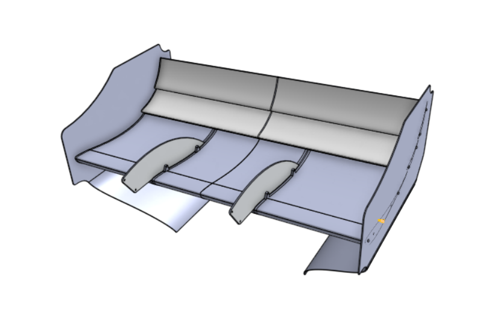
Fig 31Design 1 internal structure — ribs plus longitudinal bars for stiffness.
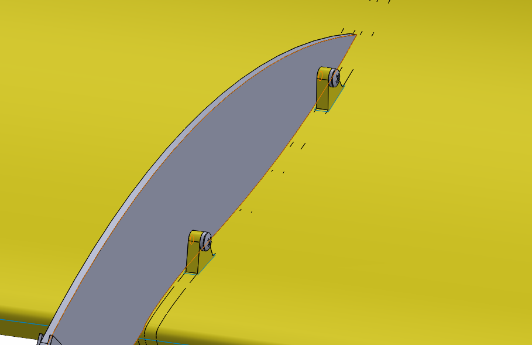
Fig 32Swan-neck mount fastened into the central ribs, keeping the suction surface clear.
Selecting between them requires running the 200 N / 10 mm distributed test and the 50 N / 25 mm
point test on the actual laminate — listed under next steps rather than claimed as done.
11 · Validation
Does the trade-off actually make the car faster?
Force coefficients are not a result until they are converted into something the car does.
The three configurations were run through OptimumLap, a quasi-steady-state
point-mass lap simulator, on the Formula Student Germany 2012 endurance track
at Hockenheim — about 1.4 km with slow, medium and fast corners plus two long straights.
Only CD and CL change between runs; mass, tyre friction and powertrain
are identical, so any lap-time difference is aerodynamic.
Table 7Aerodynamic inputs as entered in the simulator (rounded CFD values).
Configuration
CD
CL (downforce)
1 · Baseline
0.65
0.006
2 · Wings
1.73
2.70
3 · Full package
1.71
3.35
Table 8Simulated lap times. Lateral accelerations read from the OptimumLap plot and are approximate.
Configuration
Lap [s]
Gain [s]
Gain [%]
Max lateral acc. [m/s²]
1 · Baseline
86.71
—
—
≈14.7
2 · Wings
85.06
1.65
1.9
≈16.6
3 · Full package
84.59
2.12
2.4
≈17.0
Fig 33Speed along the lap — black: baseline, red: wings, blue: full package. The traces separate in the medium and fast corners and coincide in the slowest ones.
Fig 34Maximum lateral acceleration versus simulator downforce coefficient. The coefficients are the rounded Table 11 inputs; accelerations (≈14.7, 16.6 and 17.0 m/s²) are approximate readings from the OptimumLap plot in Table 12/Figure 61. Vertical scale begins at 14 m/s².
Three findings
The package works. Wings gain 1.65 s; the underbody devices add 0.47 s more, for 2.12 s (2.4%) total.
The gain is in the corners. Below ~28 km/h the traces nearly coincide — downforce grows with v², so it contributes little in the slowest turns. In medium and fast corners the aero cars carry 2–3 km/h more.
The drag penalty never appears. All three reach the same 110 km/h ceiling on both straights, despite ~2.7× the drag coefficient.
The two upgrades also differ in efficiency of gain: the wings add 2.7 of CL
for 1.65 s (≈0.6 s per unit), while the underbody devices add 0.65 for 0.47 s
(≈0.7 s per unit) because they raise downforce without raising drag. That identifies the
lower bodywork as the better place to look for the next increment.
Scope of the lap simulation
OptimumLap is a point-mass, quasi-steady-state model. It uses a constant tyre
friction coefficient with no load sensitivity, and does not model suspension,
weight transfer, aero balance, or the effect of ride height, pitch and yaw on the
coefficients. The driver is ideal, the powertrain is a typical FSAE car rather than the
intended engine, and the track is a reference layout, not one of the team's events.
Absolute lap times must not be compared with real competition times. Because real tyres
lose grip per unit load as load grows, the real gains are likely smaller
than simulated. The mass of the aero devices is not included, so these are gross gains.
12 · Limitations & next steps
What I would do differently, and next
Known limitations
Full-car geometry used non-final components, so absolute values are indicative.
XFOIL and 2D CFD are screening tools; tip vortices and front-wing wake interaction only appear in 3D.
Side-diffuser and underbody-wall contributions were not separated.
Underbody sensitivity to ride height, pitch and roll was not assessed.
No wind-tunnel or on-track validation; compute resources limited model detail.
Lap simulation uses constant tyre friction and a generic powertrain.
Next steps
Re-run lap simulation with measured engine data, a load-sensitive tyre model, and the mass of the aero devices; test sensitivity to tyre friction.
Check full-car drag against the 28.4 kW budget at the speeds the car will actually run.
Separate diffuser and wall effects; map sensitivity to ride height, pitch, roll and yaw.
Choose between the two rear-wing structures and verify against the 200 N / 10 mm and 50 N / 25 mm rulebook tests.
Plan physical validation of the final package.
13 · Tools & sources
What was used, and where the method comes from
Table 9Software and its role in the study.
Tool
Use
XFOIL
2D screening of 24 candidates at Re = 300,000, N = 160–300
3D CFD: isolated wing, baseline car, wings, full package
CAD
Wing, endplate and mount geometry; car simplification for CFD
OptimumLap
Quasi-steady-state lap-time simulation
LaTeX
The 53-page technical report
Key references
S. McBeath, Competition Car Aerodynamics — the rear-wing-first design method and wing design rules.
S. Wordley & J. Saunders, Aerodynamics for Formula SAE: Initial design and performance prediction, SAE 2006-01-0806 — the traction-limited argument.
J. Katz, Race Car Aerodynamics and Aerodynamics of Race Cars, Annu. Rev. Fluid Mech. 38 (2006) 27–63.
K. R. Cooper et al., The aerodynamic performance of automotive underbody diffusers, SAE 980030.
A. Ruhrmann & X. Zhang, Influence of diffuser angle on a bluff body in ground effect, J. Fluids Eng. 125(2) (2003) 332–338.
C. Chatpattanasiri et al., Numerical study and design of side-diffusers for Formula-SAE car, JRAME 10(1) (2022).
S. F. Hoerner & H. V. Borst, Fluid-Dynamic Lift — effective aspect ratio with endplates.
I. H. Abbott & A. E. von Doenhoff, Theory of Wing Sections.
Figures and permissions
All figures on this page are from my own analyses in the project report. Third-party
images used in the report for literature review (other teams' cars, rulebook diagrams and
published figures) are not republished here. The full report is not
distributed publicly; this page is a summary cleared for sharing.